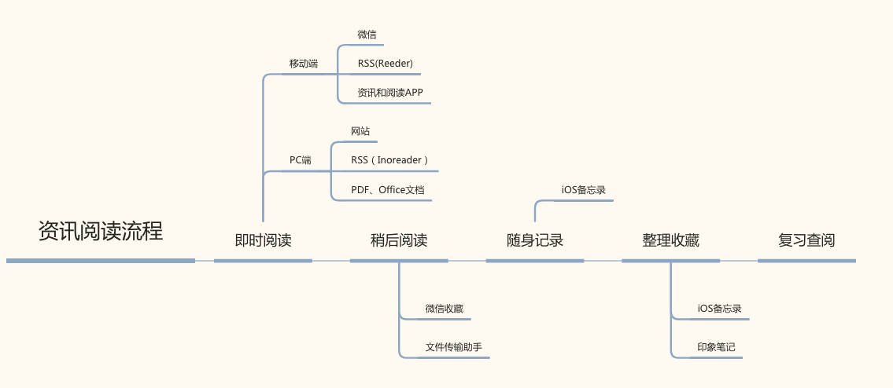
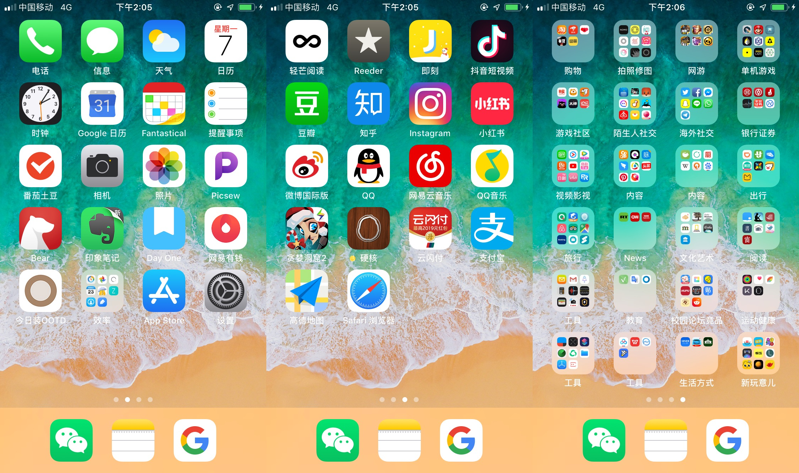

个人信息管理尝试
背景
平时记录了非常多杂乱的想法，mark了很多待阅读和写作的题材，这两天得空重新整理，并尝试梳理一直以来困扰自己的信息过载问题：
- 每日扫过大量的即时通讯、新媒体文章、报告等，觉得自己应该并且能够关注兴趣范围内的所有资讯和信息，但却感觉自己很少有记住什么东西。
- 过于频繁的检查社交网络，却感觉有效的沟通和交流不够多。如果一旦有人没回消息或者自己有未处理的未读消息，就会陷入恐慌。红点带来焦虑，没有红点带来更大的焦虑。
- 时间和注意力碎片化，极少有时间用来整理和写作，有逻辑的分析和思考的能力在下降，没有做到自己想做的“深入观察感兴趣领域”
- 手机屏幕乱、电脑文件和照片乱
经过两天梳理，重新分析了自己的信息需求，并尝试优化了处理流程。包括即时阅读、随身记录、整理收藏、写作发布等，此外，还整理了照片、手机桌面和微信使用等困扰已久的问题。

即时阅读
阅读是最主要的信息需求，占用了大量的碎片化时间，阅读来源有很多：
- 公众号文章
- 轻芒、豆瓣、知乎、网页等内容
- RSS订阅（通过Reeder和Inoreader）
- pdf和word文档
- 电子书
- 纸质书
阅读碎片化
- 使用悬浮窗，一次只读一篇文章，其余内容转“稍后阅读”。记录有价值观点。
- 频繁更新的资讯类公众号订阅迁移到轻芒阅读，减少频繁打开公众号Feed次数
- 尝试培养定时阅读习惯，上午1小时+其他时间。
- 使用PC+大屏幕阅读长文，减少手机阅读，提高阅读效率
稍后阅读
移动端使用微信文件传输助手+微信收藏+微信悬浮窗解决各种渠道待读文章和笔记，定期清理二者，将其归类到后续流程；
PC端建立印象笔记INBOX笔记本，存放所有待读、待处理内容，定期阅读和整理，避免“收藏了从来不看系列”
随身记录
平时脑中会有非常多的想法，随时记下来之后又经常会忘记，但其中也有很多有价值的内容。目前，个人主要使用的软件包括：iOS备忘录，Day One，微信文件传输助手等
微信文件传输助手
- 临时性想法，待处理的文本、图片和链接
iOS备忘录
非常简洁和强大的原生应用，手机/PC同步效率极高，缺点在于拓展功能不强，不适宜大量内容的管理。主要用于：
- 记录临时性的想法
- 生活类笔记
- 觉得不错的句子和观点
Day One
主要用于记日记，使用好几年，界面优美，功能全面，常用iPhone版。支持同步，但Mac版订阅168/年，舍不得买。
整理收藏
大量的阅读和记录之后，如何便捷和高效的检索，就成了一个问题。目前，主要使用微信收藏、iOS备忘录和印象笔记三者来收藏和查阅信息。
微信收藏
记录和查阅相对便捷，且支持转发与分享，主要用来记录以下下内容：
- 聊天记录、语音。无法导出，只能使用微信
- 有个人意义的链接、图片等，方便查找
印象笔记
备忘录太临时，微信收藏功能太少，需要笔记应用来做更全面的信息管理。
之前断续使用了好几年印象笔记和有道云笔记，在纠结之后，重新选择了印象笔记，耗时半天，清空了有道云。主要理由有：有道云笔记的微信收藏功能失效，无法批量导出笔记，没有Safari网页剪藏插件。虽然免费空间和社交分享更全面，但对个人意义不大。
使用印象笔记记录的信息包括：
- 学习笔记，如摄影、英语等
- 互联网产品、游戏、职场等
- 个人收藏的其他内容
写作及发布
写作方面，尝试了大量软件后，尝试了这样一个流程：
- idea：备忘录随时记录
- 逻辑：xMind思维导图，理清思路，并可以导出MarkDown格式大纲
- 编辑器：熊掌记，相对简洁和专注的写作环境，支持MarkDown，一次只用来写一篇文章，且不用于信息管理
- 发布
两个发布渠道
4.1 个人博客：内容包括但不限于：随笔、读书、旧文、年记等，主要优点在于界面相对简洁优美，可用于整理和浏览，且自己能够完全掌控。使用Hexo框架搭建，用VS Code和命令行进行管理和发布。
4.2 公众号：主要包括互联网产品等职场相关内容，目前刚启动。
此外，清理了藏在QQ空间、Zine、备忘录、印象笔记等各处的写作内容，分成“公开、私人、未完成”三类，公开放至博客和公众号，私人放至印象笔记，未完成放至熊掌记。
照片
摄影几年，设备换了几次，照片的管理已经成为了一种负担，目前主要存储渠道有：
- iOS 照片：手机照片、截屏等文件
定期整理照片，删除重复、无效、低质、意义不大的照片，用于写作等特殊用途的照片归类至相应素材。 - 电脑文件：近期照片、胶片等
- 移动硬盘：近一两年原始照片存档
- Google Photos：之前利用无限空间上传了所有照片，目前仅用于照片回忆
文档
分类整理了电脑文档，并计划将其汇总进印象笔记，此外，还计划尝试用Calibre管理电子书库。
手机桌面
因为工作需要，手机里装了大量使用低频的应用，整理后分为四个部分。优先级从高到低：
- Dock栏：微信，备忘录，Google App，分别对应社交、记录和搜索需求（也是个人最推崇的三家公司）
- 首屏：电话、设置等系统功能，及日程、提醒、摄影、记录等关于“个人记录”的功能，用一个文件夹放置其他同类但低频应用。
- 第二屏：社交、内容、支付等高频使用的应用，不设文件夹。
- 其他所有应用，分文件夹摆放，相近文件夹靠近摆放，单文件夹允许多屏幕

截图为不完全版本，计划再根据使用频率进行微调。
整理完后感受只有一个字：爽。
微信使用
说来讽刺，作为一名准微信PM，最想做的事是减少自己的微信使用依赖（占手机使用时长50%-60%以上）。针对不同需求，目前的解决方案如下：
- 聊天：屏蔽几乎所有群聊，定时处理消息
- 朋友圈：减少碎片化和无意识的刷朋友圈，尝试早晚定期看，忽略无效信息（才不会承认主要关注妹子和风景照）
- 阅读：如上所述。
- 收藏：逐步清理挤压的待读内容，目标是“不使用微信收藏一堆自己压根不会读的东西”。
小结
这次整理，部分解决了信息过载的问题，减少了微信的使用时长，提高了资讯阅读的效率，并重新整理了杂乱在各处的笔记和想法，但仍有些问题没有解决：
- 如何减少社交媒体和手机的低效使用？
- 如何重新建立书籍阅读习惯？
- 印象笔记和备忘录的使用有模糊地带，如何更有效管理信息？
- 如何坚持总结和写作？
19年第一篇写作，希望不是最后一篇。